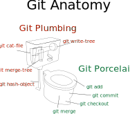

Git Activity Book
Data Structure
Objects
Blob
Objects that store file contents.
-
List all objects
We haven't added any yet, so we should see none.
git cat-file --batch-check --batch-all-objectsls .git/objects -
Create a file
echo hello world > myfile.txt -
Calculate its hash
git hash-object -t blob myfile.txt # 3b18e512dba79e4c8300dd08aeb37f8e728b8dadNote it's not the direct sha1 sum of the file.
cat myfile.txt | shasum # 22596363b3de40b06f981fb85d82312e8c0ed511 -Let's see why...
-
Add metadata to blob
echo -e "blob 12\0hello world" > myblobBlob Anatomy
Diagram( Sequence( Terminal("blob"), Terminal("space"), NonTerminal("number of bytes"), Terminal("null"), NonTerminal("file contents"), ) ) -
Hash the blob object
cat myblob | shasum # 3b18e512dba79e4c8300dd08aeb37f8e728b8dad - -
Compress blob
pigz --keep --zlib myblob -
Chuck blob into the database
mkdir .git/objects/3b mv myblob.zz .git/objects/3b/18e512dba79e4c8300dd08aeb37f8e728b8dad -
Enjoy your new domesticated blob
git cat-file --batch-check --batch-all-objects # 3b18e512dba79e4c8300dd08aeb37f8e728b8dad blob 12git cat-file -p 3b18e512dba79e4c8300dd08aeb37f8e728b8dad # hello world -
Shortcut Unlocked! Create a blob using
git hash-object -wecho foobar > otherfile.txt git hash-object -t blob -w otherfile.txt # 323fae03f4606ea9991df8befbb2fca795e648fa find .git/objects -type f
Git Plumbing and Git Porcelain
Tree
Objects that describes folders.
-
Tree Anatomy
Diagram( OneOrMore( Sequence( NonTerminal("file mode"), NonTerminal("filename"), Terminal("null"), NonTerminal("blob hash (20 bytes of sha1)"), ), ) ) -
Create leaf tree with single file
echo -e -n "100644 copy.txt\0" > childtree echo 3b18e512dba79e4c8300dd08aeb37f8e728b8dad | xxd -r -p >> childtree git hash-object -t tree -w childtree # 8209f53524b4818a6d18424613de08c1c6552f11 -
Create parent tree with folders and files
echo -e -n "40000 folder\0" > mytree echo 8209f53524b4818a6d18424613de08c1c6552f11 | xxd -r -p >> mytree echo -e -n "100644 myfile.txt\0" >> mytree echo 3b18e512dba79e4c8300dd08aeb37f8e728b8dad | xxd -r -p >> mytree echo -e -n "100644 otherfile.txt\0" >> mytree echo 323fae03f4606ea9991df8befbb2fca795e648fa | xxd -r -p >> mytree git hash-object -t tree -w mytree # 6db497f8ca5a8bf50591fd13beb12fc66dff1d31 -
Inspect your newly domesticated tree
git ls-tree 6db497f8ca5a8bf50591fd13beb12fc66dff1d31 # 040000 tree 8209f53524b4818a6d18424613de08c1c6552f11 folder # 100644 blob 3b18e512dba79e4c8300dd08aeb37f8e728b8dad myfile.txt # 100644 blob 323fae03f4606ea9991df8befbb2fca795e648fa otherfile.txtgit ls-tree -r 6db497f8ca5a8bf50591fd13beb12fc66dff1d31 # 100644 blob 3b18e512dba79e4c8300dd08aeb37f8e728b8dad folder/copy.txt # 100644 blob 3b18e512dba79e4c8300dd08aeb37f8e728b8dad myfile.txt # 100644 blob 323fae03f4606ea9991df8befbb2fca795e648fa otherfile.txt -
Shortcut Unlocked! Create a tree using
git mktreeWe'll use
git mktreein the following sections.
Commit
Objects that describe a snapshot of the entire codebase.
-
Anatomy of a commit
Diagram( Stack( Sequence( NonTerminal("tree-info"), Terminal("\\n"), ), Sequence( NonTerminal("author-info"), Terminal("\\n"), ), Sequence( NonTerminal("committer-info"), Terminal("\\n"), ), NonTerminal("zero-or-more-parents"), Terminal("\\n"), NonTerminal("message"), ) )tree-info
Diagram( Sequence( Terminal("tree"), Terminal("space"), NonTerminal("tree sha1 in hex"), ), )author-info
Diagram( Stack( Sequence( Terminal("author"), Terminal("space"), NonTerminal("name"), Terminal("space"), ), Sequence( Terminal("<"), NonTerminal("email"), Terminal(">"), Terminal("space"), ), Sequence( NonTerminal("sec since epoch"), Terminal("space"), NonTerminal("timezone"), ), ) )committer-info
Diagram( Stack( Sequence( Terminal("committer"), Terminal("space"), NonTerminal("name"), Terminal("space"), ), Sequence( Terminal("<"), NonTerminal("email"), Terminal(">"), Terminal("space"), ), Sequence( NonTerminal("sec since epoch"), Terminal("space"), NonTerminal("timezone"), ), ), )zero-or-more-parents
Diagram( ZeroOrMore( Sequence( Terminal("parent"), Terminal("space"), NonTerminal("parent sha1 in hex"), Terminal("\\n"), ) ), ) -
Create commit.
Using our previous tree object
echo tree 6db497f8ca5a8bf50591fd13beb12fc66dff1d31 > mycommit.txt echo "author Waylon Smithers <mr@smithers.invalid> 1762902000 +1300" >> mycommit.txt echo "committer Charles Montgomery Plantagenet Schicklgruber Burns <mr@burns.invalid> 1762902000 +1300" >> mycommit.txt echo "" >> mycommit.txt echo "My first commit" >> mycommit.txt git hash-object -t commit -w mycommit.txt # 02cbc162b0a74f3cbb90c6c7bcf7387b3033015bgit show 02cbc162b0a74f3cbb90c6c7bcf7387b3033015b -
Shortcut Unlocked!
git commit-treeLet's see it in action next...
-
Modify
folder/copy.txtand commitecho modified | git hash-object -w --stdin # 2e0996000b7e9019eabcad29391bf0f5c7702f0becho -e "100644 blob 2e0996000b7e9019eabcad29391bf0f5c7702f0b\tcopy.txt" | git mktree # 974cd135eb6c4da9d3f14e1de564f76a8a07234eecho -e "040000 tree 974cd135eb6c4da9d3f14e1de564f76a8a07234e\tfolder 100644 blob 3b18e512dba79e4c8300dd08aeb37f8e728b8dad\tmyfile.txt 100644 blob 323fae03f4606ea9991df8befbb2fca795e648fa\totherfile.txt" | git mktree # 486a17fba0168a9242e39931c2b0233ada6a9671GIT_AUTHOR_DATE="2025-11-12T12:00:00+13" GIT_COMMITTER_DATE="2025-11-12T12:00:00+13" git commit-tree -p 02cbc162b0a74f3cbb90c6c7bcf7387b3033015b -m "Second commit!" 486a17fba0168a9242e39931c2b0233ada6a9671 # 704cad9af4578d8f3248fe4c4e044014322f1154git log 704cad9af4578d8f3248fe4c4e044014322f1154git show 704cad9af4578d8f3248fe4c4e044014322f1154
The Immutability Iceberg
Level 1: Immutable. E.g. const.
Level 2: Value Semantics. E.g. int literals, JS strings.
Level 3: Persistent Data Structure. E.g. Elm, React redux.
Level 4: Copy-on-write. E.g. Linux processes.
Level 5: Content Addressed (CAS). E.g. Git LFS, v86.
Level 6: Merkle Trees. E.g. git, nix, blockchains, ZFS, IPFS.
Index
The bridge between objects and the working directory.
-
Meet your index
We won't be writing it manually. It's a slightly hairy binary file.
ls -la .git/index # ls: cannot access '.git/index': No such file or directoryLet's fix that.
-
Add an entry to index
Similar to what happens when you run
git add.git update-index --add --cacheinfo 100644,2e0996000b7e9019eabcad29391bf0f5c7702f0b,my/path/to/file.txt -
Generate a tree out of the index
Similar to what happens when you run
git commit.git write-tree # cfcb4ca1dbe0dbcfd99df397d57d2d6fe3853745git ls-tree -r cfcb4ca1dbe0dbcfd99df397d57d2d6fe3853745 -
Read existing tree into index
Similar to what happens when you run
git reset.git read-tree 486a17f git statusgit read-tree cfcb4ca git status
Refs
Naming objects so we don't need to remember long hashes.
Tags (Lightweight)
The introverted ref that doesn't move on it's own.
-
Create a tag
Save an object id into the refs folder.
echo 704cad9af4578d8f3248fe4c4e044014322f1154 > .git/refs/tags/mytag -
Say hello to your new tag
git show mytag -
Shortcut Unlocked!
git update-refgit update-ref refs/tags/mytag 704cad9 -
Old Friend Reunited:
git taggit tag another-tag 704cad9
Heads (aka Branches)
The extroverted ref that moves with us.
-
Create a branch
So we can keep track of what we're working on.
echo 704cad9af4578d8f3248fe4c4e044014322f1154 > .git/refs/heads/master git show master -
Create another branch
For when you need to work on multiple places at the same time. But how do we keep track of which branch we're on?
echo 02cbc162b0a74f3cbb90c6c7bcf7387b3033015b > .git/refs/heads/story git show story -
Write the
.git/HEADsymolic refNow we know what branch we're on.
echo ref: refs/heads/story > .git/HEAD git show -
Commit, and watch it move
Branches follow us to the new commit we make.
echo ref: refs/heads/master > .git/HEAD cat .git/refs/heads/master # 704cad9af4578d8f3248fe4c4e044014322f1154echo new-content > newfile.txt git add newfile.txt git commit -m "Third commit" cat .git/refs/heads/master # a8df5619fbd04c68508c5bf887147a3a4116d3e3
Side note: git update-ref and git symbolic-ref also write to the reflogs: .git/logs/HEAD and .git/logs/refs/*, so we can retrace our steps whenever we get lost.
Annotated Tags
-
Create an annotated tag
git tag -a -m "This is an important commit" my-important-tag 704cad9af